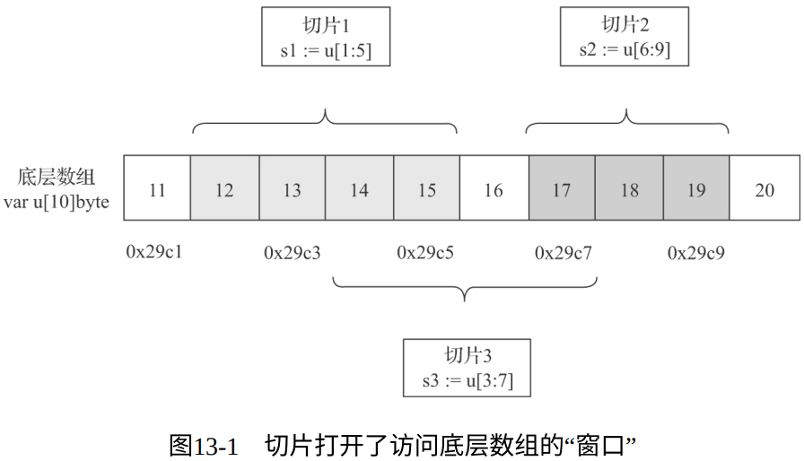
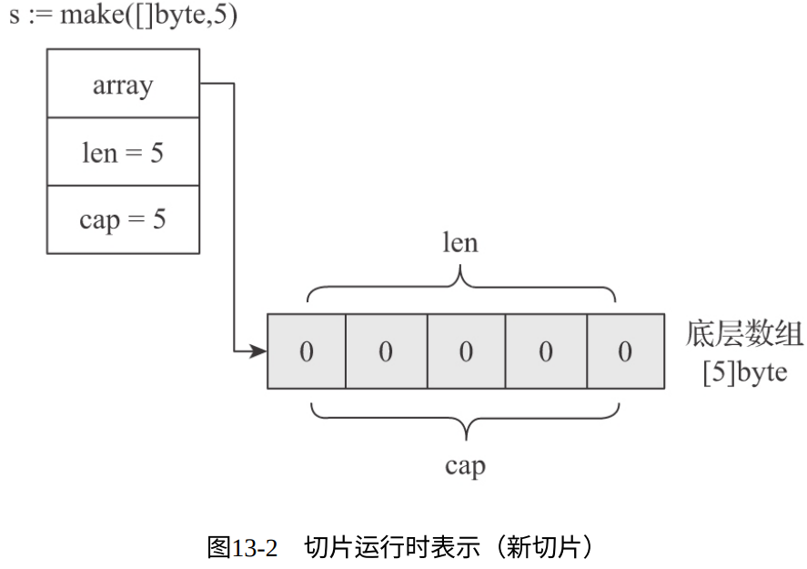
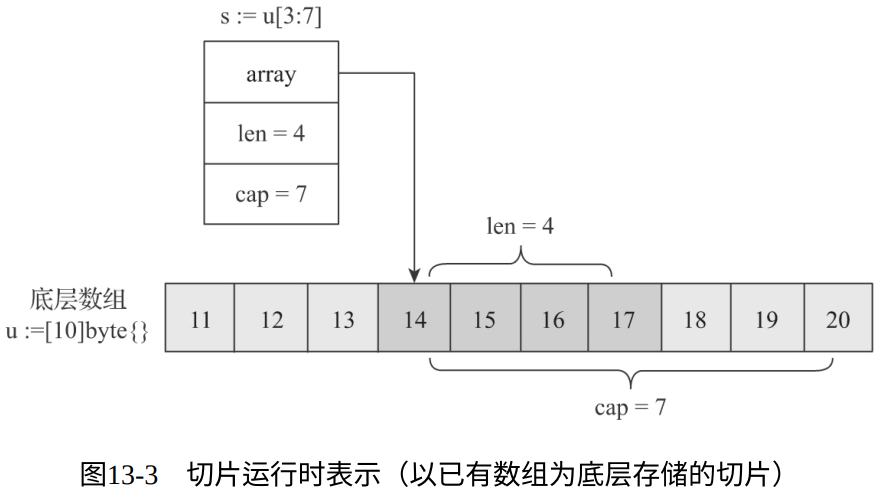
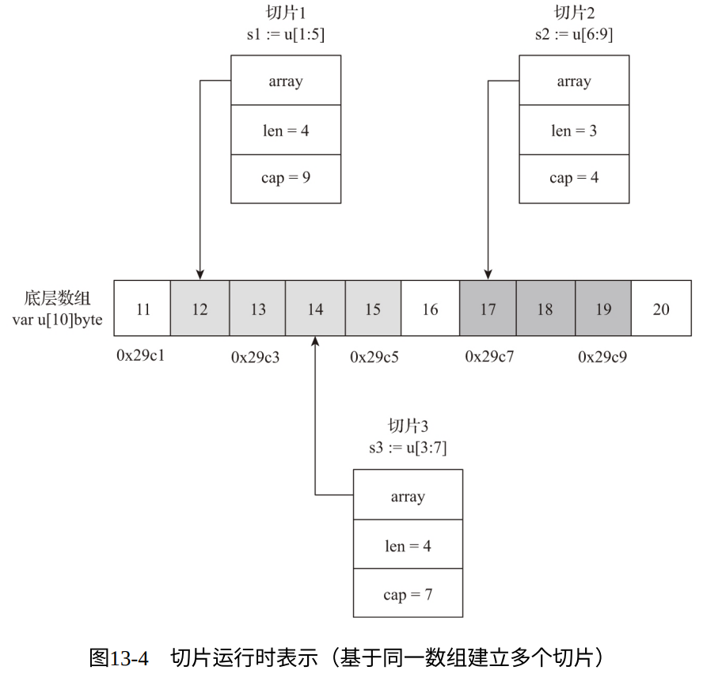
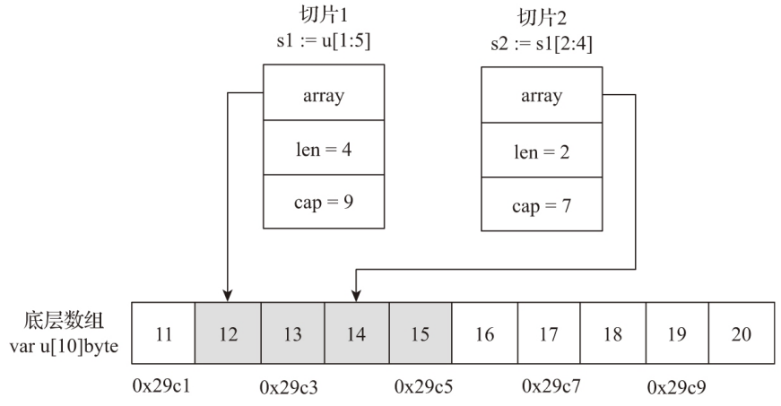
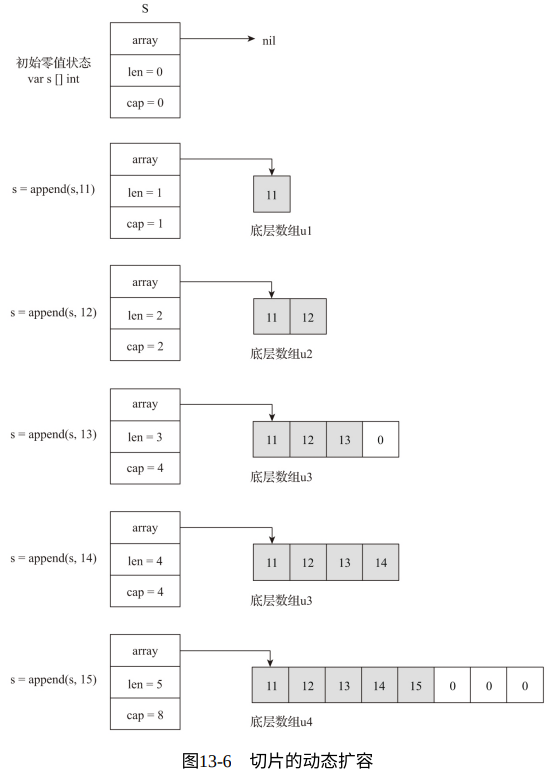

每当你花费大量时间使用某种特定工具时，深入了解它并了解如何高效使用它是很值得的
1. 切片究竟是什么
Go语言数组是一个 固定长度的 、容纳同构类型元素的 连续序列。因此Go数组类型具有两个属性： 元素类型和数组长度 ，只有两个属性都相同的数组类型才是等价的
Go数组都是 值语义 ，即一个数组变量表示的是整个数组。而不是像C语言一样，数组变量还可以被视作指向数组第一个元素的指针。
- 切片之于数组就像是文件描述符之于文件：数组更多是退居幕后充当底层容器的角色；而切片更多是走向台前充当 访问底层容器的窗口 的角色：
- 
切片在Go运行时层面的内部表示：
//$GOROOT/src/runtime/slice.go type slice struct { array unsafe.Pointer // 指向下层数组某元素的指针，该元素也是切⽚的起始元素 len int // 切⽚的⻓度，即切⽚中当前元素的个数 cap int // 切⽚的最⼤容量 }
切片的创建：
- 
数组的切片化：
- 
共享数组的多切片访问：
- 
- 切片的reslicing：
- 
- 无论切片描述的底层数组有多大，作为参数传递的切片带来的性能存好都是很小且恒定的
- 切片可以提供比指针更为强大的功能，比如 下标访问 、边界溢出校验 、动态扩容 等
2. 切片的高级特性：动态扩容
// chapter3/sources/slice_append.go
var s []int // s被赋予零值nil
s = append(s, 11)
fmt.Println(len(s), cap(s)) //1 1
s = append(s, 12)
fmt.Println(len(s), cap(s)) //2 2
s = append(s, 13)
fmt.Println(len(s), cap(s)) //3 4
s = append(s, 14)
fmt.Println(len(s), cap(s)) //4 4
s = append(s, 15)
fmt.Println(len(s), cap(s)) //5 8

- append会根据切片的需要，在当前底层数组容量无法满足的情况下，动态分配新数组，新数组长度会按一定算法扩展。
- 新数组建立后，会将原数组数据复制到新数组中，再让切片指向新的底层数组，最后将原数组GC掉。
- 因此：当切片触碰到底层数组的上界时，继续添加元素会令切片的底层数组不在是原来的底层数组，从而会出现 切片和底层数组的隐式解除绑定的现象 。
3. 尽量使用cap参数创建切片
基于上面的原理，在创建新切片时，将预估的切片容量数据一cap参数传递给make，可以减少内存分配和数据移动的次数，从而提高性能。